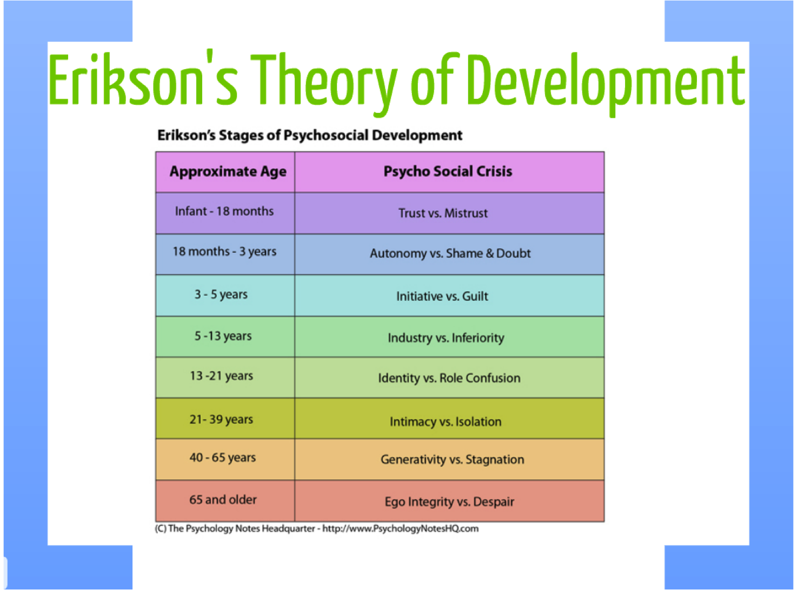

By Ajay Vijayakumar
For more information, click here

Picture above: https://zanl13.wordpress.com/
For more information click here
Childhood
For more information click here:
https://www.britannica.com/
Attachment
For more information click here:
https://www.verywellmind.com/
https://www.verywellmind.com/
Which Lion King character are you??
https://ohmy.disney.com/quiz/
Relation to Lion King
Disney’s Lion King has numerous scenes that can be connected with psychological concepts and stages. Children from ages 0-13, Disney’s intended audience, may be in different stages and will perceive the themes expressed in this film differently, and will learn different things. Children in Piaget’s preoperational stage, (ages 2-7), will learn that symbols can represent ideas. For instance, children will learn that Mufasa, rather than simply being Simba’s father, represents a paternal figure for responsibility over land and people. Also, the Lion King introduces abstract through Mufasa’s emotional manipulation of Simba. This is still too abstract for children, however it helps broaden their emotional capacity and perspective, which is vital for their development to adolescence. Additionally, the Lion King engages with children in Erik Erikson’s ‘Autonomy vs Shame and Doubt’ and ‘Initiative vs Guilt’ stages, through the theme of independence. By illustrating Simba’s growing self sustainability and life away from his home, the Lion King encourages autonomy to young children. The Lion King also expresses the importance of attachment. Although Simba flees from his family and loses his father, he still makes strong parental-like bonds with Pumba and Timon. Disney highlights how attachment and relationships are essential in children’s lives, and can impact development. Because Timon and Pumba took Simba under their care, Simba had security, warmth, food and love. Furthermore, the Lion King draws parallels to the concept that children, early on, base nearly all of their actions to keep parental approval. Scar is a parental figure to Simba in the middle of the movie, and Simba is very obedient to him. When Scar tells Simba to run away after Mufasa’s death, Simba complies. This naivety and direct compliance to parental figures corresponds to children’s mindsets. However, by illustrating how Simba listening to Scar resulted in harm to the nation, the Lion King is introducing the idea that morality and actions should not always be based off parental approval, something that children grow to realize as they approach adolescence.